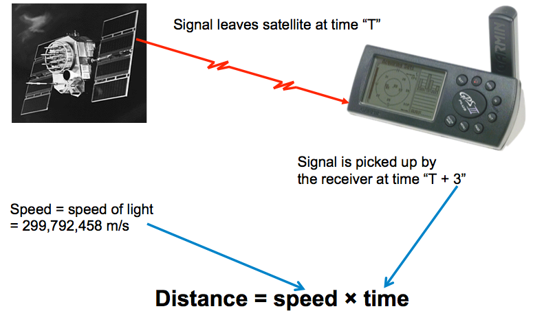

A Brief Introduction to Global Navigation Satellite Systems (GNSS)
Barry Byford
@uk_baz
Navigation has been around for a long time
Evolution of Navigation: Landmarks
http://www.indiana.edu/~iirg/ARTICLES/NAVIGATION/wayfinding.html
Evolution of Navigation: Celestial Navigation
Accurate time becomes important
Evolution of Navigation: Ground Based Radio
Accurate time becomes important
Evolution of Navigation: Early Satellite
Accurate time becomes important
Global Positioning System
- American Department of Defence started development in 1973
- In 1995 it was declared fully operational
- Satellites have the advantage of:
- Signal reception is better than by land
- Signals can pass through clouds and rain
- Satellites are hard to dismantle
- System provides:
- Navigation anywhere in the world
- Under any weather condition
- Unlimited number of users
- For Free (after equipment purchase)
Trilateration to find location
Trilateration to find location
Trilateration to find location
To find distance from speed and time

Overview of Workshop Hardware
{kind=link}